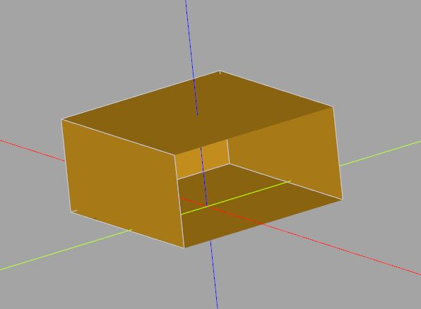
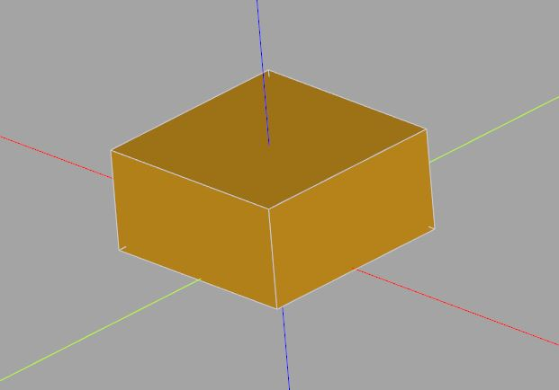
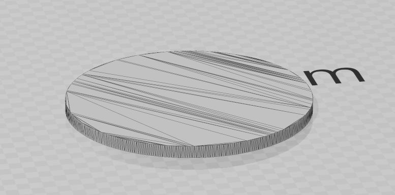
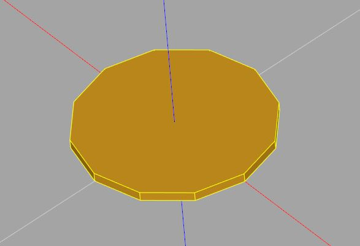

認識 BREP
November 25, 2021在〈基本 2D 操作〉中，談到如何透過 circle、rect 等來建立 2D 幾何資訊，如果需要更複雜的 2D 幾何資訊呢？在談到怎麼做之前，得先來認識一下 CadQuery 採用的幾個幾何術語與觀念。
BREP 術語
在 CadQuery 的官方文件〈3D BREP Topology Concepts〉談到，CadQuery 是以 OpenCascade 作為核心，而 OpenCascade 採用 BREP（Boundary Representation）來表示實體模型，也就是以點、線、面等作為基礎，其相互間的關係來描述模型。
相對地，OpenSCAD 主要是採用 CSG（Constructive Solid Geometry）來表示實體模型，也就是一個實體模型，可以表示為立方體、圓柱體、球點等基本物體布林操作後的結果，這讓 OpenSCAD 相對而言，初期進入的門檻很低，只不過 OpenSCAD 偏 Functional programming 典範，後期要做複雜模型時，相對就比較不容易了。
CadQuery 對 OpenCascade 作了封裝，然而使用 CadQuery 時，若能掌握幾個 BREP 的觀念，在使用上就會很有彈性：
- 頂點（vertex）：空間中的一個點。
- 邊（edge）：頂點間的連結。
- 線（wire）：一組依序相連的邊，通常是包圍著一個面。
- 面（face）：線圍成的區域。
- 殼（shell）：彼此連結的一組面。
- 實體（solid）：可以將一個空間封閉起來的殼。
- 複合體（compound）：一組不連續的實體組合。
BREP 與 CadQuery API
來透過畫正方形並擠出為立方體，瞭解一下以上的觀念，正方形的四個頂點是 (1, 1)、(-1, 1)、(-1, -1) 與 (1, -1)，先移到第一個頂點：
import cadquery as cq
box = cq.Workplane().moveTo(1, 1)
Workplane 會在內部儲存頂點資訊，接著畫一條線到 (-1, 1)：
box = cq.Workplane().moveTo(1, 1).lineTo(-1, 1)
現在兩個頂點構成了一個邊，Workplane 會使用 Edge 型態儲存邊的資訊，來繼續畫線：
box = (cq.Workplane()
.moveTo(1, 1)
.lineTo(-1, 1)
.lineTo(-1, -1)
.lineTo(1, -1)
)
這會構成了三個獨立的邊，若要將這三個邊組成一個線，可以使用 wire 方法：
box = (cq.Workplane()
.moveTo(1, 1)
.lineTo(-1, 1)
.lineTo(-1, -1)
.lineTo(1, -1)
.wire()
)
Workplane 會使用 Wire 內部型態儲存線的資訊，你可以使用 extrude 來擠出 Wire，這會構成一個 3D 實體，不過就以上的例子來說，擠出後會看到破面。例如：
box = (cq.Workplane()
.moveTo(1, 1)
.lineTo(-1, 1)
.lineTo(-1, -1)
.lineTo(1, -1)
.wire()
.extrude(1)
)
extrude 會透過 Wire 的資訊來計算出必要的面，然而不會檢查這些面構成的殼是否能封閉一個空間，3D 模型的破面就是，無法封閉一個空間的殼：

就以上的程式而言，是因為你只有三個邊，這並沒有圍成一個封閉路徑，你可以明確地再增加一個邊連回 (1, 1)，以構成封閉路徑：
box = (cq.Workplane()
.moveTo(1, 1)
.lineTo(-1, 1)
.lineTo(-1, -1)
.lineTo(1, -1)
.lineTo(1, 1) # 明確地再增加一個邊
.wire()
.extrude(1)
)
或者呼叫 close()，表示就目前給予的頂點順序構成封閉路徑，這會自動將最後一個頂點連回第一個頂點：
box = (cq.Workplane()
.moveTo(1, 1)
.lineTo(-1, 1)
.lineTo(-1, -1)
.lineTo(1, -1)
.close() # 封閉路徑
.wire()
.extrude(1)
)
這樣擠出後就不會有破面了：

多邊形函式
如果你事先已經有一組頂點資訊了，更簡單的方式是透過 polyline 來建立邊，例如，來寫個 polygon 函式，可以生成多邊形：
import cadquery as cq
def polygon(points):
return cq.Workplane().polyline(points).close()
# 建立正方形並擠出
box = polygon([(1, 1), (-1, 1), (-1, -1), (1, -1)]).extrude(1)
在〈基本 2D 操作〉中談到的 circle、rect 等，會建立封閉路徑的 Wire，可以直接進行擠出，這邊特別要提及的是，世界上其實沒有完全的圓，circle 建立的圓是虛擬的，輸出為 STL 的話，可以看出是正多邊形，若沒有調整 exporters.export 的 tolerance 或 angularTolerance 的話，預設應該是 96 個邊左右，這在一般人的眼睛就覺得是個完美的圓了：

對於一些模型，有時也不用使用到 96 邊的正多邊形作為圓，這時就會想要能自行調整邊數的圓：
from math import cos, sin, radians
import cadquery as cq
def polygon(points):
return cq.Workplane().polyline(points).close()
def circle(r, fn):
a_step = radians(360 / fn)
points = [(r * cos(a_step * i), r * sin(a_step * i)) for i in range(fn)]
return polygon(points)
plate = circle(10, 12).extrude(1)
執行後的結果如下：

實際上，Workplane 本身就有個 polygon 方法，只不過目前只用來建立正多邊形，而這邊自行定義的 polygon 函式，可以用點指定任意的形狀。
CadQuery 還有一些高階的 2D 操作方法，有些會構成邊，有些會將邊組成線，API 文件中，基本上都會說明，只要掌握以下的觀念，搭配 API 文件，就能彈性地建立各種 2D 幾何資訊。